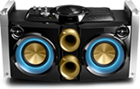
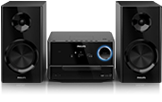
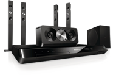
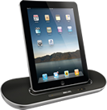
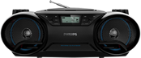

Você sabia que existe um som
adequado para cada ambiente?
A PHILIPS AJUDA VOCÊ A ENTENDER AS DIFERENÇAS
ENTRE OS MODELOS E DESCOBRIR QUAL É O SOM
PERFEITO PARA A SUA NECESSIDADE!

Mini System
Potência máxima e um som para ninguém botar defeito. O Mini System é ideal para quem quer curtir a música em alto e bom som. Indicado para festas, casas, ambientes grandes ou lugares abertos.
Micro System
Ideal para ambientes de tamanho médio, apartamentos e escritórios, por unir design e qualidade de som. Potência adequada para animar pequenas festas, jantares ou som ambiente que não atrapalhe uma boa conversa com quem você gosta. Diversas opções de mídia para curtir os sons dos seus CD’s, pen drive, celular ou mp3/mp4 via entrada auxiliar.
Home Theater
O Home Theater é o responsável por levar todo o áudio com qualidade de cinema para sua sala. Assistir aos seus filmes preferidos com sua família ou amigos com um som surpreendente e muito mais real é o que este tipo de aparelho pode fazer por você*.
*É preciso verificar o tamanho da sala e a compatibilidade com o modelo que será adquirido para obter melhores resultados.
Dock Station
Relaxar e ouvir uma música de boa qualidade enquanto o dispositivo móvel tem sua bateria recarregada. O Dock Station é ideal também para levar em viagens, pois é fácil de transportar e sua bateria funciona por horas!
 Conheça também a linha de Áudio Conectado da Philips!Rádio Portátil
Leve e fácil de carregar, pode ser transportado tranquilamente de um cômodo para outro da casa. Ideal para ambientes menores que não exigem tanta potência. Praticidade para ouvir músicas de CD’s, USB ou via entrada auxiliar que pode conectar vários dispositivos. Também é bastante utilizados por professores de idiomas e em academias, pela facilidade de transporte.
